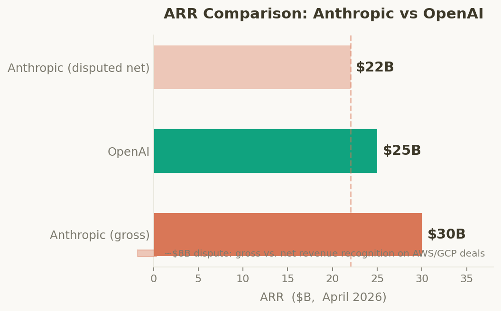
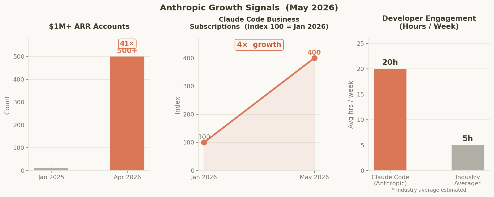
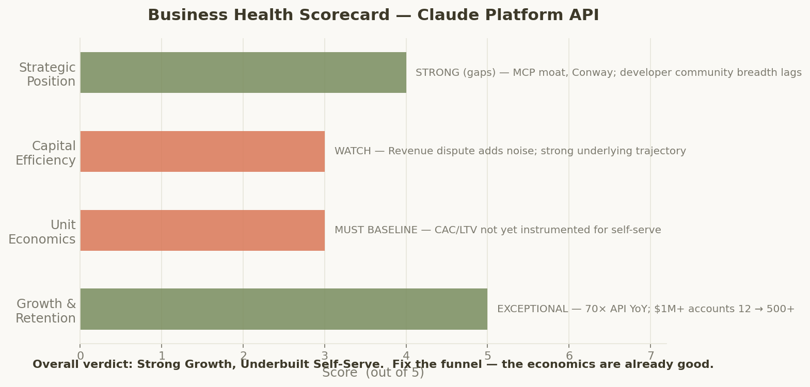
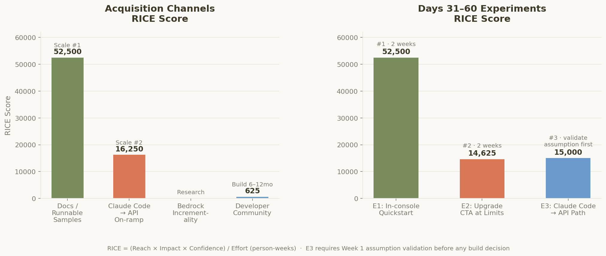
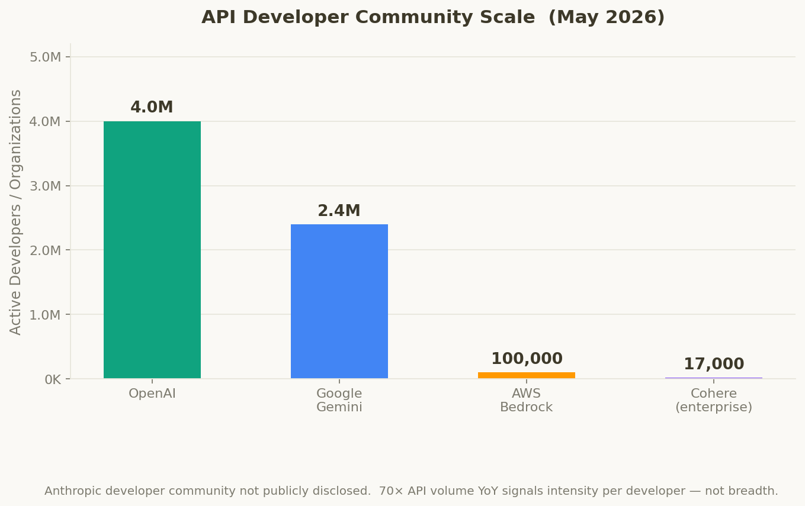
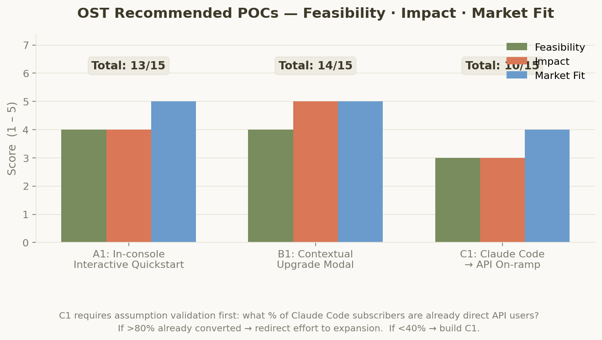
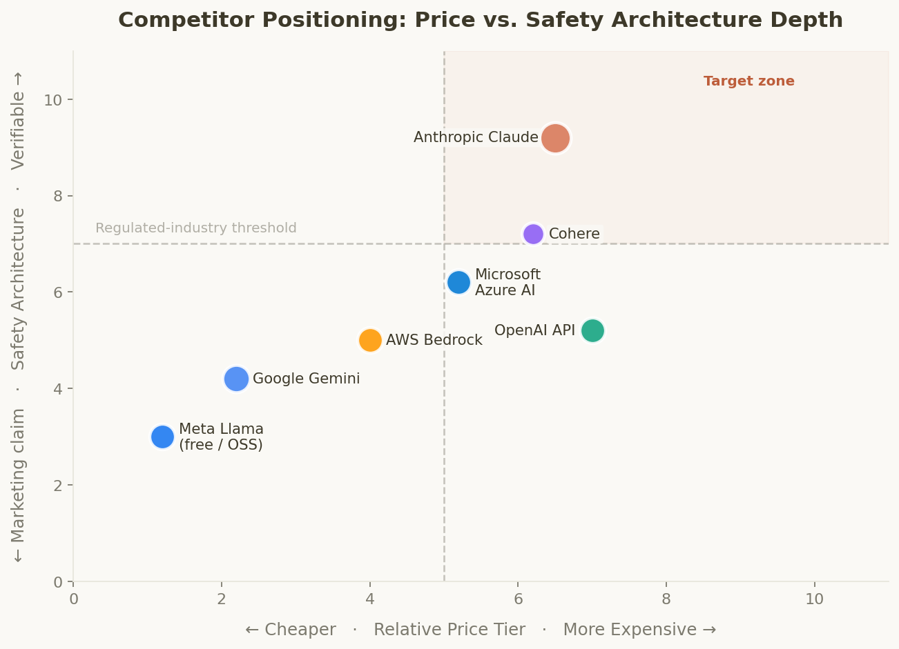
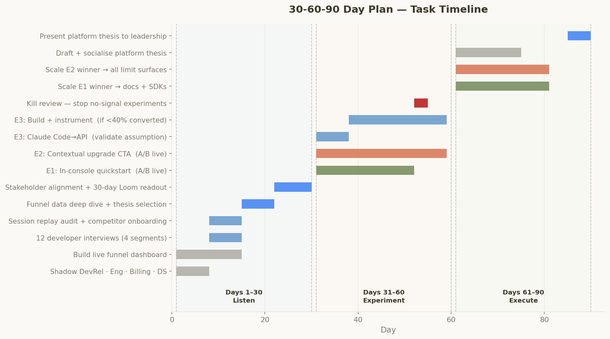
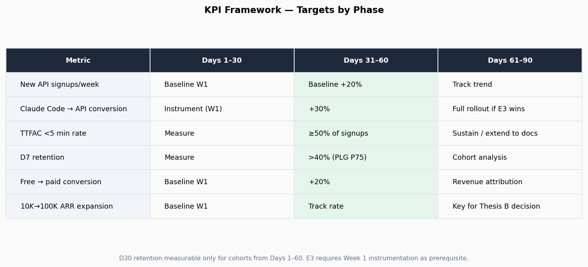
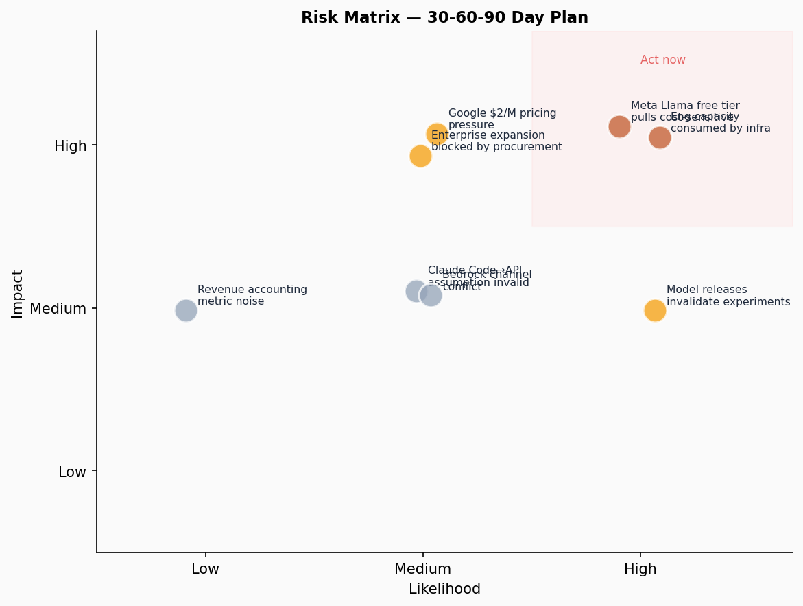

Six frameworks applied — MITRE Problem Framing · Geoffrey Moore Positioning · Opportunity Solution Tree · Business Health Diagnostic · Acquisition Channel Advisor · Company Research.
$305K – $385KSF · NY · SeattleAcquisition → Activation → Monetization6+ years PMplatform.claude.com
$30B
ARR (April 2026)
~$8B gross vs. net dispute
70×
API Volume YoY
Fastest-growing infra layer
500+
$1M+ ARR Accounts
Up from 12 one year ago
$2.5B
Claude Code Run-rate
4× business subs since Jan 2026
20h
Dev Engagement / Week
Highest activation signal
$380B
Post-money Valuation
Series G, March 2026
Section 1 + 4 — Company Research · Business Health
Growth Signals & Business Health
4-dimension SaaS diagnostic across Growth, Retention, Unit Economics, Capital Efficiency.

ARR: Anthropic vs OpenAIAnthropic leads on gross-reported ARR. OpenAI disputes ~$8B on revenue recognition. Underlying growth trajectory is not in dispute.

Key Growth Signals$1M+ accounts grew 41× in 15 months. Claude Code business subs 4× since Jan 2026. Developer engagement at 20h/week.

Business Health ScorecardOverall verdict: Strong Growth, Underbuilt Self-Serve. Fix the funnel — the economics are already good.
Section 2 — MITRE Problem Framing Canvas v3
Problem Framing
Look Inward → Look Outward → Reframe. Bias-resistant problem statement before any solutions.
Core Assumption to Challenge
Bottleneck is acquisition
May actually be activation — developers who sign up but never make a second API call.
Who's Been Left Out
Evaluators, not builders
Console optimized for developers who've decided to build — not those still comparing Claude vs. GPT.
Hidden Competitor
Meta Llama ($0)
Cost-sensitive devs compare Claude to free self-hosted Llama, not $X/M OpenAI tokens.
Analogs That Solved This
Stripe · Twilio · Vercel
All won on activation speed, not marketing spend. "7 lines of code" beats any ad campaign.
How Might We Statement
How might we help any developer — regardless of technical level, geography, or prior AI experience — reach their first working Claude integration in under 3 minutes, so they can experience the quality and safety difference before choosing a competitor?
Section 3 — Geoffrey Moore, Crossing the Chasm
Positioning Statement
Not a tagline — a strategic clarity tool that forces hard choices on target, need, and differentiation.
For independent developers, startup engineering teams, and regulated-industry architects
that need to build AI-powered applications that users and enterprises can trust — without treating safety as a separate compliance layer,
Claude Platform is a frontier AI API
that delivers state-of-the-art reasoning, 200K token context, and Constitutional AI safety properties your applications inherit by design — making regulated-industry deployment possible without additional compliance overhead.
Unlike OpenAI's API, Claude Platform provides verifiable safety-by-architecture — meaning applications inherit Constitutional AI properties that pass enterprise procurement reviews, financial services audits, and healthcare compliance checks without requiring custom safety guardrails.
Section 5 — Acquisition Channel Advisor
Acquisition Channels & RICE Scores
CAC · LTV · Payback across all known API acquisition channels. Estimates directional — baseline in Days 1–30.

Channel & Experiment RICE ScoresDocs runnable samples (52,500) leads all channels. Claude Code → API on-ramp is highest quality but needs Week 1 assumption validation before build.

Developer Community ScaleOpenAI's 4M developer head start compounds via network effects. Anthropic's advantage is intensity per developer (20h/week), not breadth.
Outcome → Opportunities → Solutions → Assumption Tests. The tree ends at tests, not solutions.
◎
Desired Outcome: Increase API Platform Activation Rate
% of new signups making their first successful API call within 24 hours. Top-quartile PLG benchmark: >50% within 24h. 10pp improvement at 10K signups/month = 1,000 additional activated developers on a compounding usage curve.

Recommended POC Scoring (Feasibility · Impact · Market Fit)B1 contextual upgrade modal scores highest (14/15). A1 in-console quickstart 13/15. C1 requires assumption validation: what % of Claude Code users are already API users?
Opportunity A · POC: A1
In-console Interactive Quickstart
Score 13/15. "Run this code" button with pre-loaded working API call. 2 weeks → dogfood → A/B at 20% signups.
Opportunity B · POC: B1 — Top Score
Contextual Upgrade Modal
Score 14/15. Upgrade CTA at rate/token limit hit. Hypothesis: +20% free→paid conversion vs. billing-page only.
Opportunity C · Validate First
Claude Code → API Path
Instrument in Week 1. If >80% already converted → redirect effort. If <40% → build C1 authenticated on-ramp.
Section 7 — Competitive Analysis
Competitive Landscape
Top 5 competitors + Meta Llama open-source floor. May 2026 data.

Price vs. Safety Architecture DepthAnthropic holds the top-right corner alone. No other closed-model provider can replicate Constitutional AI quickly.
Competitor
Scale
Primary Moat
Pricing
Gap Anthropic Can Exploit
OpenAI
~4M developers
First-mover, GPT brand
Premium
Safety is marketing-thin; regulated-industry liability
Google Gemini
~2.4M (+118% YoY)
Ecosystem embed + price
$2/M — ~1/7.5× Claude Opus
Developer trust issues; data privacy concerns
Microsoft Azure
70% Fortune 1000
Enterprise incumbency, GitHub Copilot (145M)
Enterprise EA
No proprietary frontier model; IT-buyer focused, not developer-first
AWS Bedrock
100K+ orgs
Model-agnostic infra
Usage-based
Claude-specific use cases require direct API; no safety story
Cohere
~17K enterprises
Sovereign / multilingual AI
Enterprise contract
Wins procurement, not developer love; model quality below frontier
Meta Llama (floor)
1.2B+ downloads
Free open weights
$0 self-hosted
Can't compete on price — must win on safety, SLA, compliance
Section 8 — 30-60-90 Day Plan
Platform Thesis Candidates
Select one by Day 30. Experiments validate the thesis — they don't originate it.
A
MCP Ecosystem as Distribution Moat
Anthropic invented MCP. Position platform.claude.com as the canonical place to discover, publish, and monetize MCP servers. Developers who publish extensions compound switching costs.
Assumption: Developers are building MCP servers without a canonical marketplace. Validate via informal GitHub directories and community lists.
B
Enterprise Self-Serve Expansion ($10K → $1M ARR)
$1M+ ARR accounts scaled 12 → 500+. Biggest unlock is expansion — removing the sales rep at the $50K–$200K tier via usage dashboards, SSO, RBAC, and audit logs.
Assumption: Accounts stall due to missing tooling, not pricing. Validate: interview 10 accounts in this tier about their expansion blockers.
C
Safety as a Paid Growth Feature for Regulated Verticals
Finance, healthcare, and government are underserved by OpenAI and Google. Constitutional AI is real differentiation — but platform tooling doesn't yet match the safety story.
Assumption: Regulated-industry devs are blocked by missing platform controls, not procurement complexity. Validate: product gaps vs. process gaps.
Section 8 — Landing Plan Execution
30-60-90 Day Timeline
Anthropic PM culture: Product Notes not PRDs · 45-min prototype cycles · dogfood-first · no 12-month roadmaps.
Days 1–30
Listen & Map
Shadow DevRel, Eng, Billing, DS — one day each
Build live funnel dashboard: TTFAC, D7, paid conversion
12 developer interviews across 4 segments
Session replay audit — 20 onboarding sessions
Do competitor onboarding yourself
Select platform thesis by Day 30
Days 31–60
Experiment
E1: In-console quickstart A/B — RICE 52,500
E2: Contextual upgrade modal — RICE 14,625
E3: Claude Code → API path — RICE 15,000
Kill review at Week 3 — stop no-signal tests
First KPI review with Eng, DevRel, Finance
Days 61–90
Execute & Publish
Full rollout of winning experiments
Kill losers — document learnings
KPI dashboard: Day 0 vs Day 90 delta
Platform thesis presented to leadership
Q2 experiment roadmap drafted

Task TimelineThesis selected in Week 4 based on research. Experiments validate it in Days 31–60. Kill review at Day 52 stops no-signal work early.
Section 8 — KPIs & Risk Register
KPIs & Risk
D30 retention only measurable for cohorts from Days 1–60. E3 requires Week 1 instrumentation as prerequisite.

KPI Targets by PhaseFree→paid conversion baseline must be set before any experiment claims improvement.

Risk MatrixTop-right cluster (act now): Eng capacity + Meta Llama free tier + model releases invalidating mid-experiment assumptions.
Risk
Likelihood
Impact
Mitigation
Model releases invalidate mid-experiment assumptions
High
Med
Design experiments model-agnostically
Eng capacity consumed by model infrastructure
High
High
Ship UI-only wins first to build PM credibility before requesting eng allocation
Meta Llama 5 (free, frontier-class) pulls cost-sensitive developers
High
High
Target regulated verticals where free open-source is not viable